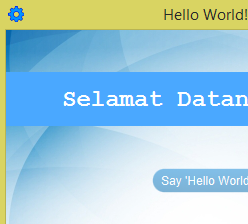
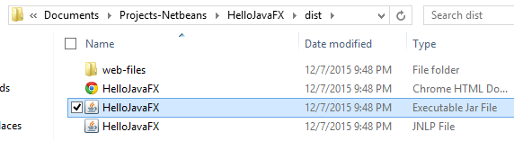
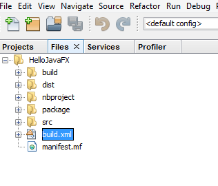
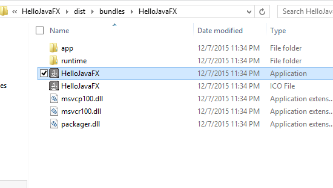
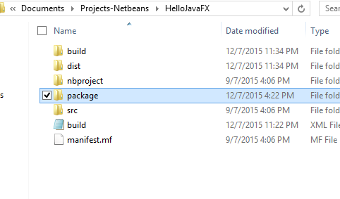
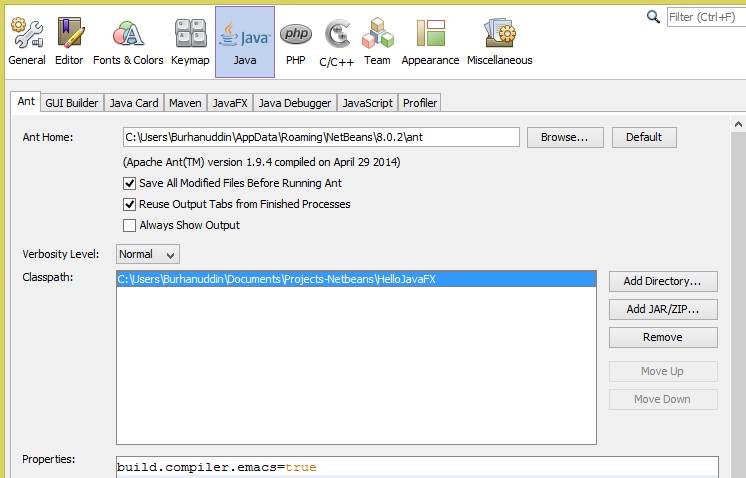
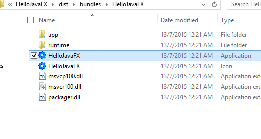

Deployment (Ant)
Setelah menyiapkan program JavaFX, kita boleh membuat deployment untuk mengedarkan program tersebut kepada pengguna. Deployment perlu dibuat kerana takkanlah kita mahu pengguna menggunakan Netbeans untuk run program kita.
Jadi, seperti software-software yang lain, kita akan membuatkan program JavaFX boleh run hanya dengan double-click sahaja.
Icon
Sebelum kita membuat deployment, kita akan tambah sedikit lagi pada program kita, iaitu icon. Icon biasanya diletakkan pada sesuatu software untuk memberi identiti kepada software tersebut.
Kita boleh menggunakan mana-mana software seperti GIMP atau Photoshop,
untuk membuat icon. Saya buat icon yang simple sahaja menggunakan
Paint.NET. Icon tersebut mestilah menggunakan saiz segi empat sama,
contohnya 32×32, 48×48, 64×64 dan sebagainya. Icon tersebut kemudiannya
diletakkan di dalam package hellojavafx.style.
Untuk memaparkan icon pada program JavaFX, kita tambah code berikut di
HelloJavaFX.java:
package hellojavafx;
import javafx.application.Application;
import javafx.fxml.FXMLLoader;
import javafx.scene.Parent;
import javafx.scene.Scene;
import javafx.scene.image.Image;
import javafx.stage.Stage;
public class HelloJavaFX extends Application {
@Override
public void start(Stage stage) throws Exception {
Parent root = FXMLLoader.load(getClass().getResource("view/Home.fxml"));
Scene scene = new Scene(root);
stage.setTitle("Hello World!");
stage.getIcons().add(new Image(getClass().getResourceAsStream("style/icon.png")));
stage.setScene(scene);
stage.show();
}
/**
* @param args the command line arguments
*/
public static void main(String[] args) {
launch(args);
}
}
Semestinya nama gambar tersebut mengikut nama yang anda gunakan. Selepas run, kita boleh nampak icon tersebut di atas kiri stage tersebut.

Executable JAR
Program Java biasanya dipakejkan di dalam file JAR. Contoh yang sama untuk programming language C/C++ ialah file EXE.
Untuk membuat file JAR dengan Netbeans, klik kanan pada project,
kemudian klik Clean and Build. File JAR tersebut akan berada di dalam
folder dist di folder project.

Untuk run program tersebut, hanya perlu double-click pada
HelloJavaFX.jar. Folder dist tersebut kemudian boleh diedarkan dalam
bentuk file ZIP, contohnya dengan menggunakan 7-Zip.
Executable EXE
Note: Untuk lihat cara yang lebih senang, pergi ke Deployment (Netbeans).
File JAR jarang digunakan untuk desktop application. Jadi, sebagai alternatif, kita boleh menggunakan file EXE.
Untuk pengetahuan anda, program Java bukannya run secara native seperti C/C++, tetapi dengan menggunakan Java Virtual Machine (JVM). Itu sebabnya kita memerlukan Java Runtime Environment (JRE) untuk run program Java.
Dengan membuat file EXE, kita boleh sertakan sekali JRE bersama dengan program kita supaya user tidak perlu download JRE secara berasingan.
Untuk membuat file EXE, buka file build.xml di bawah tab Files.

Kemudian tambah code ini sebelum </project>:
<target name="-post-jfx-deploy">
<fx:deploy width="${javafx.run.width}"
height="${javafx.run.height}" nativeBundles="all"
outdir="${basedir}/${dist.dir}" outfile="${application.title}">
<fx:application name="${application.title}"
mainClass="${javafx.main.class}"/>
<fx:resources>
<fx:fileset dir="${basedir}/${dist.dir}" includes="*.jar"/>
</fx:resources>
<fx:info title="${application.title}" vendor="${application.vendor}"/>
</fx:deploy>
</target>
Setelah selesai, buat benda yang sama, klik kanan pada project
kemudian klik Clean and Build.
Hasilnya, akan ada folder bundle di dalam folder dist yang
mengandungi file EXE tersebut.

Tukar icon file EXE
Note: Untuk lihat cara yang lebih senang, pergi ke Deployment (Netbeans).
Biasanya kita lihat setiap software yang menggunakan file EXE mempunyai icon yang tersendiri. Jadi, kita akan membuat benda yang sama menggunakan icon yang kita sudah buat sebelum ini.
Sebelum itu, kita mesti menukar file extension icon kita kepada
.ico. Saya menggunakan servis online di online-convert.com untuk
menukar icon ke extension .ico.
Namakan icon tersebut sama dengan nama program kita iaitu
HelloJavaFX.ico.
Kemudian buat folder baru di dalam folder project dengan nama
package. Di dalam folder package, buat folder baru windows. Letak
HelloJavaFX.ico di dalam folder windows tersebut.

Setelah selesai, buka Netbeans, kemudian klik menu Tools di menu atas,
dan klik Options. Pergi ke seksyen Java, dan klik tab Ant. Klik
Add Directory... untuk menambah Classpath. Pilih folder projek
HelloJavaFX.

Klik Apply dan OK.
Sekarang kita boleh build kembali dengan menggunakan Clean and
Build. Hasilnya:

Executable EXE tanpa JRE
File EXE sebelum ini disertakan sekali dengan JRE. Saiz JRE adalah lebih kurang 150 MB. Kemungkinan ada user yang sudah install JRE pada komputer mereka, jadi kita beri mereka pilihan sama ada untuk mendapatkan program berserta JRE ataupun tidak.
Untuk membuat file EXE tanpa JRE, buka kembali build.xml dan tambah
<fx:platform basedir=””/> seperti berikut:
<target name="-post-jfx-deploy">
<fx:deploy width="${javafx.run.width}"
height="${javafx.run.height}" nativeBundles="all"
outdir="${basedir}/${dist.dir}" outfile="${application.title}">
<fx:application name="${application.title}"
mainClass="${javafx.main.class}"/>
<fx:resources>
<fx:fileset dir="${basedir}/${dist.dir}" includes="*.jar"/>
</fx:resources>
<fx:info title="${application.title}" vendor="${application.vendor}"/>
<fx:platform basedir=""/>
</fx:deploy>
</target>
Seperti biasa, build menggunakan Clean and Build.
Installer
Setelah selesai membuat file EXE, kita boleh membuat installer untuk program tersebut. Installer dibuat bertujuan untuk memudahkan user _menentukan di mana mahu meletakkan file-file program, dan juga memudahkan user untuk _uninstall program tersebut.
Dengan installer juga, kita hanya perlu mengedarkan file installer itu sahaja.
Untuk membuat installer, kita boleh menggunakan sama ada Inno Setup ataupun WiX.
Klik untuk download Inno Setup
Dengan Inno Setup, ikut sahaja arahan Script Wizard. Saya tidak pernah menggunakan WiX. Anda boleh baca arahan di documentation WiX jika anda mahu.